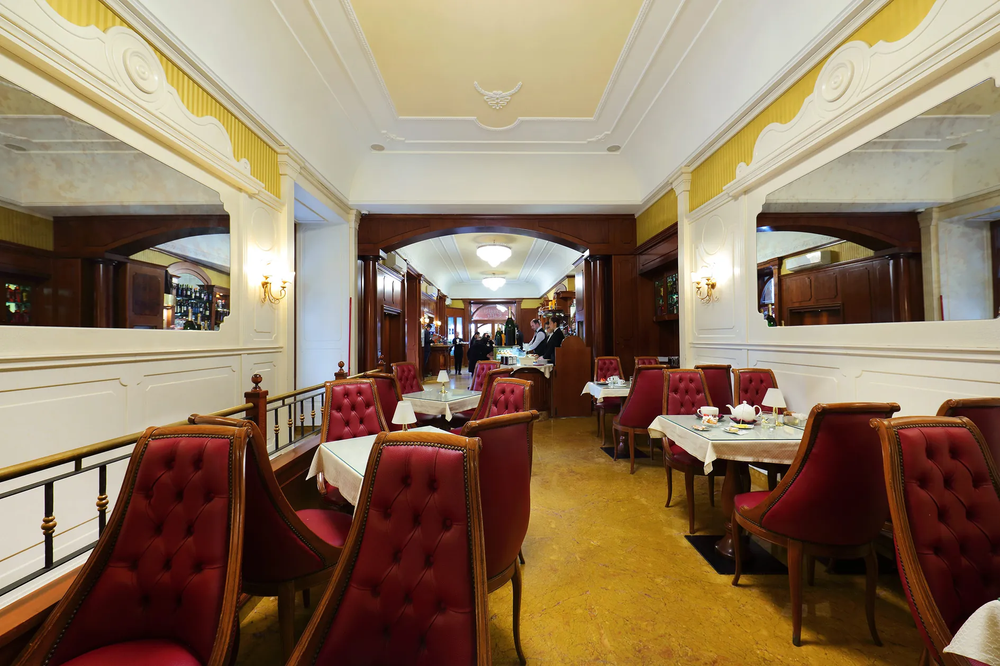
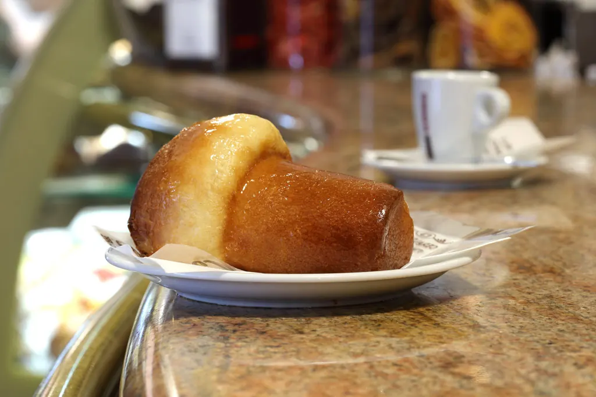
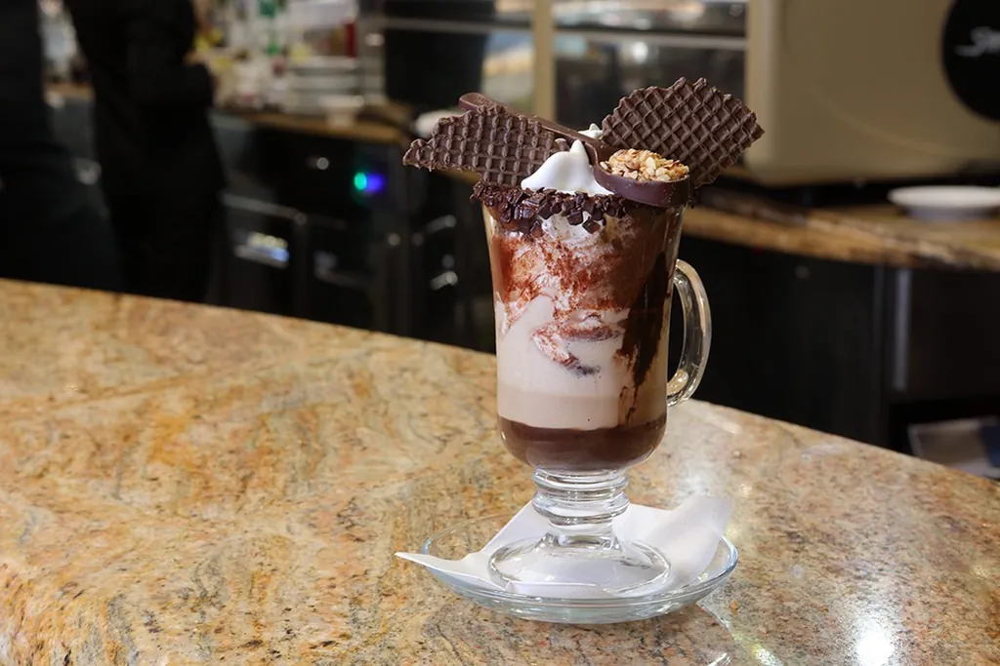
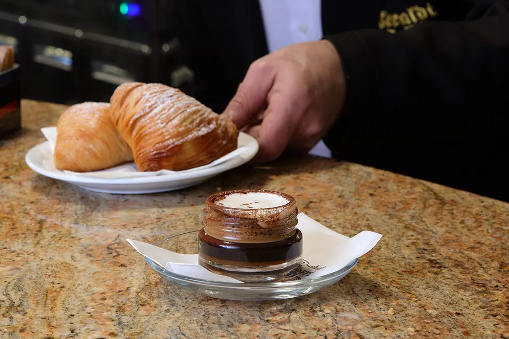
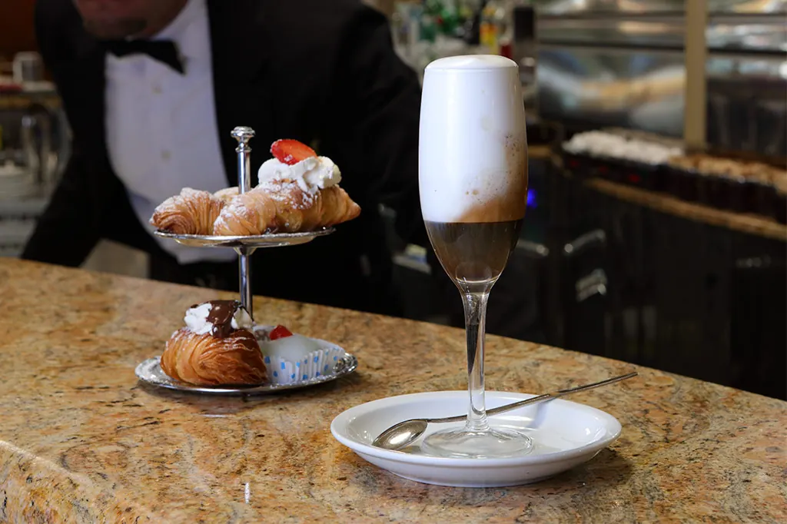
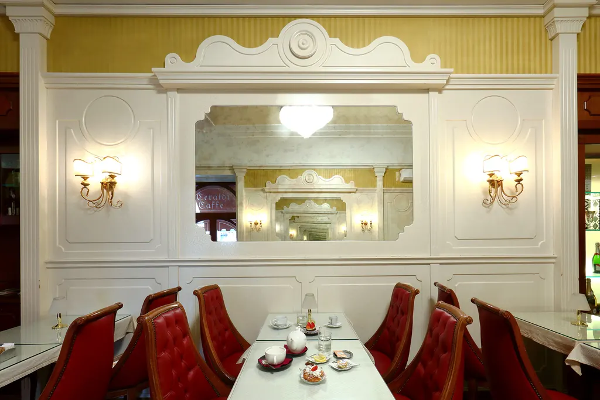

Sfogliatella riccia
Ricotta, semola, canditi e cannella dentro mille sfoglie croccanti. Riccia, frolla o Santa Rosa.
La sua storia
Bar e pasticceria · Piazza Carità 14, Napoli
Caffè napoletano, sfogliatelle e babà di produzione propria. Dalla prima tazzina delle 6:30 all'aperitivo della sera, lungo via Toledo.
Produzione propria
Nascono nei nostri laboratori, ogni giorno, con ricette di famiglia tramandate nel tempo.
Ricotta, semola, canditi e cannella dentro mille sfoglie croccanti. Riccia, frolla o Santa Rosa.
La sua storia
Soffice e bagnato al punto giusto: classico, con crema e amarena oppure con panna e fragole.
La sua storia
La nostra firma al bancone: cioccolata calda sul fondo, crema di caffè e panna montata fresca.
I caffè della casaTutte le specialità della casaIl menu completoRosticceria e pranzo veloce
Dalle 6:30 alle 20:30

Mattina
Cornetto e cappuccino, sfogliatella o graffa appena fatta. E per chi viene da lontano, la Full English Breakfast tutte le mattine.
Il bar e la colazione
Pomeriggio
Un caffè della casa e un dolce della vetrina, seduti tra gli specchi e le poltroncine rosse.
La pasticceria
Sera
L'Aspritz fatto in casa con agrumi della Costiera e Asprinio di Aversa, spritz e cocktail preparati al banco.
L'AspritzLa nostra storia
Michele Ceraldi apre il suo primo bar davanti alla stazione, tra chi parte e chi arriva.
L'arrivo al numero 14, lungo via Toledo: un angolo vuoto che sembrava aspettarci.
Michele porta avanti il bar con Vincenzo e Valerio, dal laboratorio al bancone.

Riconoscimenti e recensioni
4,3 su 5
Valutazione media su Google, su 1.946 recensioni. Dato rilevato il 20/10/2026.
Storie dal caffè

Caffè e colazione
Si paga un caffè in più, per chi entrerà dopo e non potrà permetterselo. Un'abitudine piccola, nata nei bar di Napoli.

Pasticceria napoletana
Grano cotto, ricotta, fiori d'arancio. Nessun dolce racconta la primavera a Napoli come la pastiera, e nessuno ha tante leggende.

Napoli: luoghi e tradizioni
La piazza dove si trova Ceraldi Caffè ha cambiato nome e monumenti più volte. Ecco la sua storia e cosa c'è intorno.
Vieni a trovarci
Lungo via Toledo, tra piazza Dante e piazza del Plebiscito, all'ingresso della Pignasecca e dei Quartieri Spagnoli. A pochi minuti a piedi dalle fermate Toledo e Dante della metro Linea 1.